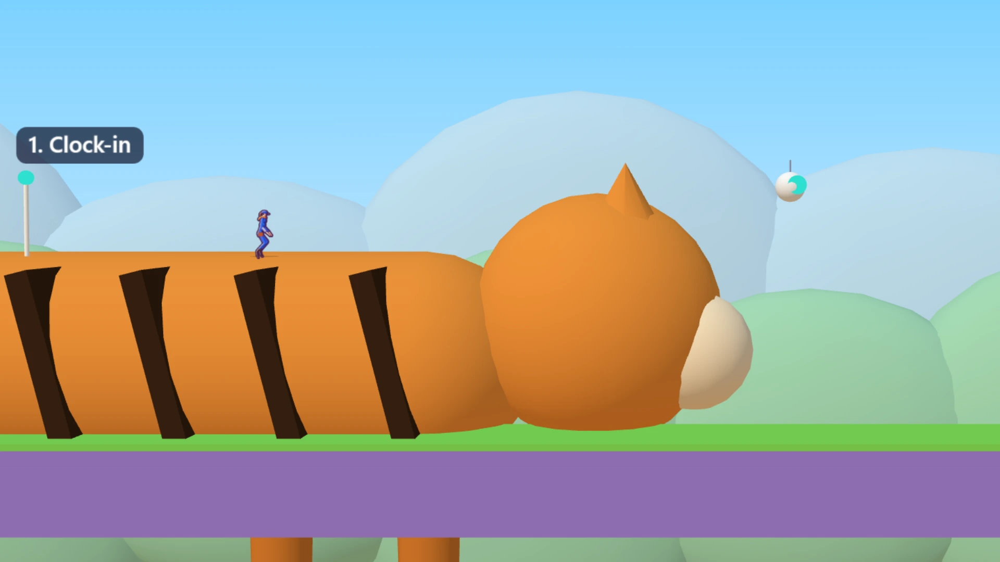
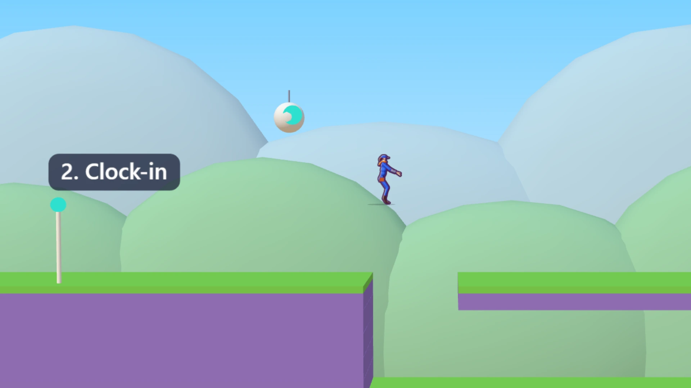
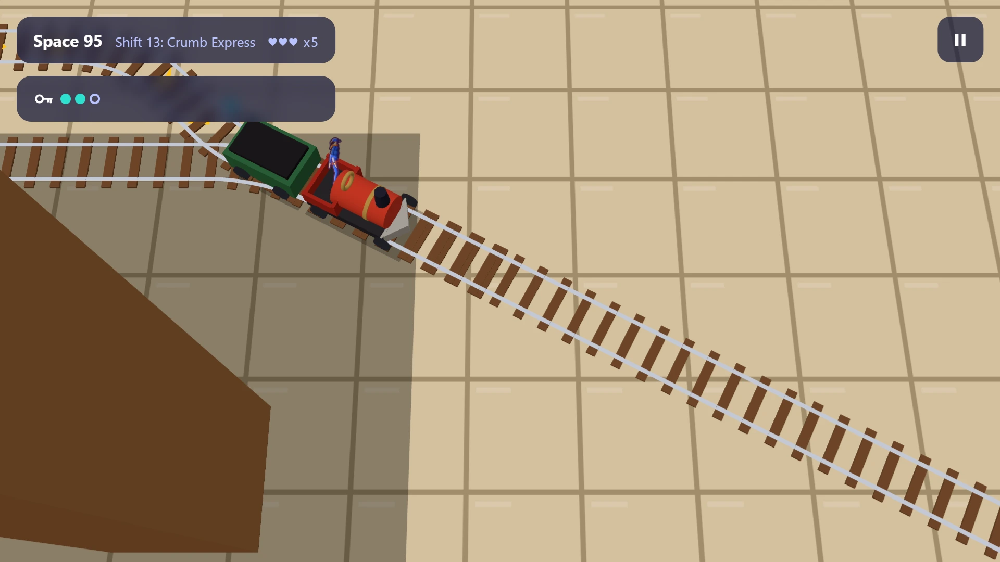

Space 95 — a free platformer about a 9-to-5 job in space
Say it out loud: nine to five. Jo and the android Bolt are surveyors on a routine shift on Galaxa Z, a planet where an ant is as big as you and a beetle is the size of a car. Run, jump, glide and fly from shift to shift, find what the planet hides, and clock off under par.


The job
Jo Halley and Bolt work for Space 95 Survey Co., a small company that maps new planets nine to five. Galaxa Z was meant to be an ordinary shift. Then the ship came down in an orchard where the apple trees are yellow with purple trunks, the grass is teal, the rivers run like honey, and everything is enormous. Bolt talks like the company handbook. Nobody is saving the world. They are at work.
On the title screen you choose who Jo is, a woman or a man. Both play exactly the same, and you can change it later.
Twenty shifts, never the same twice
Every shift has one idea of its own. You run across the orchard floor, climb a purple trunk to the canopy, dig down through soft soil, glide between the trees on a seed, run the other way from a giant shoe, sail a rain puddle the size of a sea, drive a toy train on the kitchen floor seen from above, fly a plane in a dogfight over the garden and ride the back of a sleeping beast that breathes under your feet.
And in each shift the world helps you in a different way: a pebble you kick rolls into the beetle ahead, a drop of blue dew bounces you higher than you aimed, an ant column you hop on carries the enemies away. Bosses wait in shifts 4, 8, 10, 12 and 16.
Where it stands: all twenty shifts are open to play, the finale included. Most levels now have painted backdrops, and the bosses and a few insects still have stand-in bodies while their animations are made.
Controls that forgive you
Hold jump to jump higher, and a jump pressed a moment too early or too late still counts. New moves arrive as you go: the double jump, the ground pound, the dash, the leaf glide, the wall jump and Bolt's hook. Clock-in beacons sit every half minute or so and right after every hard stretch.
When you fall, you get six and a half seconds to press jump and dash together, and Bolt pulls you back to the last solid ground you stood on. A game over only sends you to the start of the shift, and every secret you found is kept.
On a computer: the arrow keys or WASD to run, Space to jump, Shift to dash, K for the hook, R to retry and Esc to pause, or a gamepad. On a phone, held sideways: a thumb stick on the left and the buttons on the right.
Secrets, Intel and the timesheet
Every shift hides three secrets: a cache behind a wall or under the scenery, a deed off the main path, and a rare specimen that behaves differently from the rest. The level quietly leads you towards them, so finding one feels like your own idea. What you find is filed as Intel on the planet.
At the end of each shift the timesheet shows your time on the shift against par, about two minutes at full speed, your best time and the Intel you filed. Clear all twenty, the finale included, and HQ sends its performance review.
Badges on your Magestican profile
Space 95 counts on your studio profile like every other game here: experience, your level and the daily challenge, with its own badges, from First Day on the Job and Lucky Kick to Pest Control, On Schedule and Exceeds Expectations. A few, like Meets Expectations and Employee of the Year, are earned in the finale. Your progress is saved in your browser, and no account is needed.
More adventures
For a bigger world to explore, try Dachis, a monster-friend RPG on an island. For something faster, race Kartzoom. For a quiet life on another small world, try Moon Life.